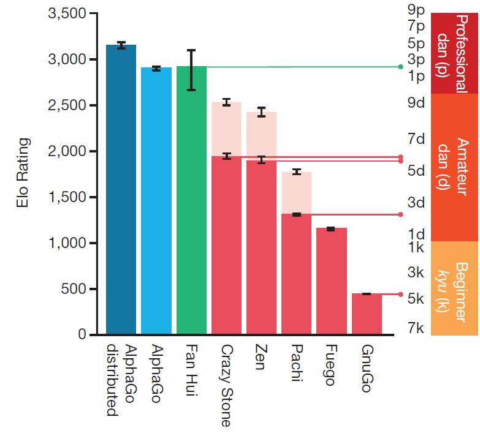
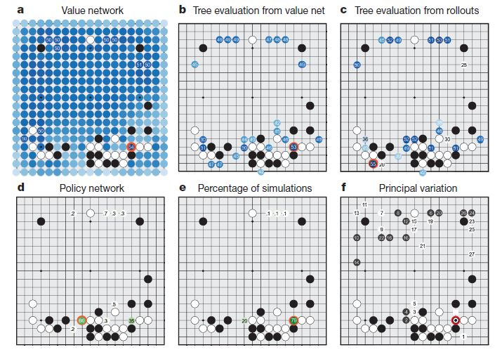
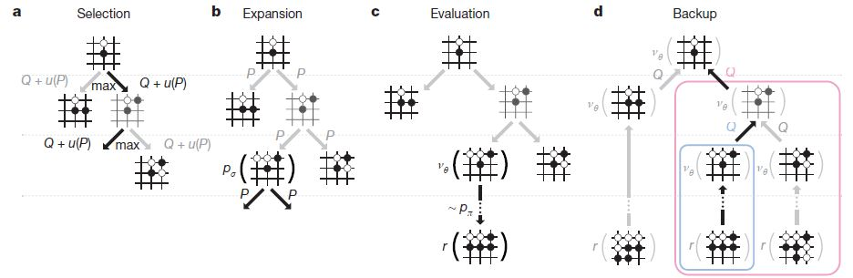
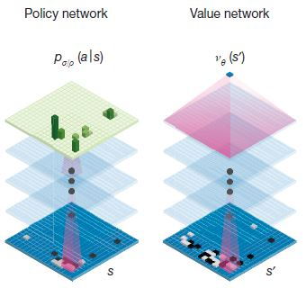
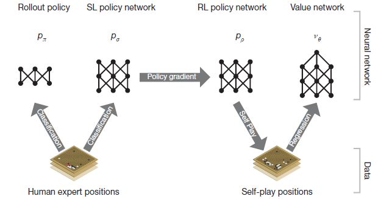
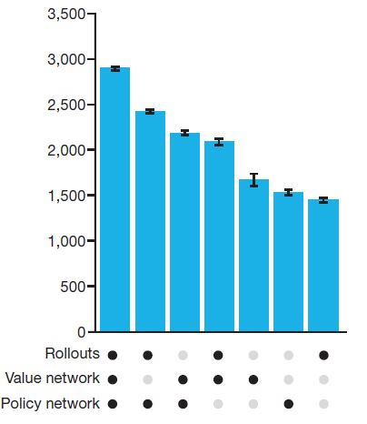
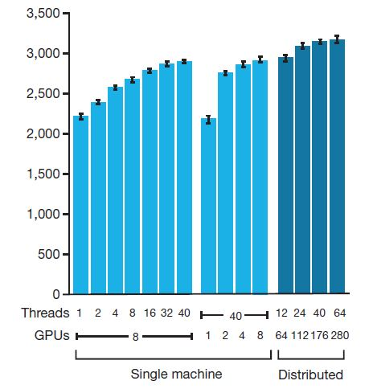

알파고(AlphaGo)가 바둑 두는 방법
Comments구글의 딥마인드(DeepMind)에서 만든 deep learning 기반 바둑 프로그램(?) 알파고(AlphaGo)가 오는 3월 9일 부터 15일까지 이세돌 9단과 경기를 가진다.
장안의 화제라 나도 궁금해서 한번 찾아보았고, 이를 공유하고자 이 글을 쓴다.
이 글의 내용은 Nature에 실린 알파고 논문을 기반으로 작성하였고, 내 수준이 딸려서 잘못 이해하고 쓴 내용도 있을 수 있으니 참고만 하시길...
이글을 읽기 전에 도움이 될만한 영상
인공지능의 도전과 한계
사람을 이기는 인공지능은 참 오래동안 연구자들의 목표이자 모든 사람들의 관심사였다. (이와 관련된 영화들이 참 많다. 대부분 인공지능이 인류를 위협하는 내용이지만...)
이런 맥락에서 여러 게임들에서는 이미 인공지능이 사람을 앞질렀다. 대표적인 예가 체스이고, 제퍼디 쇼에서도 IBM 왓슨이 사람을 꺾은 바 있다.
그러나 바둑은 경우의 수가 너무 많아서 컴퓨터가 다 계산을 할 수 없기 때문에 아직까지 인간을 이길 수 없는 영역이었는데, 알파고가 이에 도전하고자 한다.
대부분 기사에 나서 알겠지만, 알파고는 몇달 전 유럽 챔피언 판 후이 2단을 5:0으로 꺾었다.
그리고 논문에 따르면 다른 인공지능 바둑 프로그램을 99.8%의 확률로 다 이긴다고 한다.
아래 그림은 딥마인드에서 매긴 Elo 점수인데, 보이는 바와 같이 5단 수준의 실력이라고 주장한다. (판후이 점수가 그리 높지는 않다.)

어떻게 그럼 알파고는 프로 수준의 실력을 달성할 수 있었을까? 나는 프로그램이 인간처럼 생각하는 법을 배웠기 때문이라고 생각한다. deep learning 알고리즘 덕분이다.
바둑 선수에게 왜 거기에 뒀냐고 물어보면, 대부분 여기가 제일 좋은 것 같아서 라고 대답할 것이다.
그리고 여기에 두면 상대가 어디에 둘 것인지도 예측이 가능하다. 이는 다 직관에 의한 것인데, 컴퓨터는 이것을 잘 하지 못 한(했)다.
체스 같은 경우는 그냥 컴퓨터가 다 모든 경우를 뒤져보고 좋은데 두면 되기 때문에 사람을 이겼던 것이지 직관을 가져서 이긴 것은 아니다 (지금은 직관을 가질지도..).
알파고는 이러한 직관을 가질 수 있도록 deep learning 알고리즘을 사용하고, 컴퓨터가 잘하는 경우의 수 빠르게 뒤지기 (Monte Carlo Tree Search를 사용했다.) 를 동시에 사용한다.
AlphaGo의 동작 원리
뭐 여러가지 기법들을 사용하는 데 간단하게 요약을 해자면, 좋을 것 같은 수를 여러 개 추려서 관련된 경우의 수를 다 뒤지고 그 중 제일 좋은 곳에 둔다.
사람이 두는 방식이랑 매우 비슷하다.
좋을 것 같은 수를 사람보다 못 찾을 테고 관련된 경우의 수를 더 잘 찾겠지. (사람보다 좋을 것 같은 곳을 더 잘 찾을 수도 있다....)
예를 먼저 보여주고 각 단계를 하나하나 설명하고자 한다.

-
Value Network는 그 상태에서의 승률을 예측 하는 것이다. 보면 빨간색 동그라미가 value network를 통해 예측한 가장 승률이 높은 지점이다.
-
Tree Evaluation from value net 는 앞서 뽑은 후보 군 들에서 계속 value network를 통하여 몇 수를 둬 보고 승률을 다시 판단하여 어디가 좋을지 결정한다.
-
Tree Evaluation from rollouts 는 앞서 뽑은 후보 군 들에서 계속 rollouts(계산 대충해서 빠르게 둬 보는 것?)으로 끝까지 둬보고 승률을 다시 판단하여 어디가 좋을지 결정한다. 아래 그림이 Tree Evaluation 을 얘기 하며, 저 맨 아래 꽁지 r 이 rollout을 얘기한다.
 -
Policy Network 야 말로 어디에 둘지 그냥 결정하는 것인데, 선수들의 기보를 통해 배웠기 때문에 잘하는 사람을 따라하는 것이랑 비슷하다고 볼 수 있다.
-
Percentage of simulations & Principal Variation 들은 내가 잘 이해를 못 해서 설명을 잘 못하겠다....
이런 방식으로 어디에 둘지를 점점 추려서 가장 좋을 것 같은 곳으로 둔다.
핵심은 저 value network랑 policy network를 얼마나 잘 만드느냐에 따라 달려 있는 것 같다.
이 놈들이 deep neural network로 되어 있고, 이 좋을 것 같은 곳을 예상하는 것이 사람처럼 동작한다고 볼 수 있다.

Deep learning을 조금 아는 사람들을 위한 추가 설명을 하고자 한다. 기본적인 지식이 없다면 그냥 넘겨도 된다.
얘네도 역시 CNN을 사용했다. CNN은 최근 몇년사이에 엄청난 성공(?)을 특히 이미지 쪽에서 이뤘다.
"Feature"를 잘 찾고 "Representation"을 잘 하기 때문인데, 이게 바둑에도 잘 되나 보다.
딥마인드의 주장에 따르면 바둑판을 19*19의 이미지로 보고 "construct a representation of the position"를 위해서 CNN을 썼다고 한다.
나도 바둑은 잘 모르지만 이게 충분히 가능할 수 있다고 보는 게, 바둑 판에 나열된 돌 들 중에서 핵심 부분(예를 들면 장벽?)들이 있을 테고 이런 것들을 잘 지키고 깨부수냐에 따라 승패가 좌우되는 것으로 알 고 있다. 전장의 형국이라고 비유를 해야 하나. 아무튼 이런 것들이 사람이 보기에도 직관적으로 눈에 가장 크게 들어 올테고, 역시 사람처럼 CNN이 잘 되는게 make sense 한 것 같다.
이제 저 network 들을 어떻게 learning 하는 지 보자.

흐름은 위 그림과 같다.
-
Rollout policy는 간단한 계산으로(별 생각없이) 그냥 대충 둬 보는 것이다. 이거를 통해서 끝까지 가상으로 둬보고 어디가 좋은지 판단하는 데에 도움을 준다.
-
SL (Supervised Learning) policy network는 선수들의 기보를 보고 배우는 것이다.
당연히 이게 가장 승리로 가는 빠른 길(?) 이기 때문에 learning rate가 높다. -
RL (Reinforcement Learning) policy network는 알파고끼리 직접 두면서 조금 더 가다듬는(?) 작업이다. learning rate가 작아서 판단에 큰 영향을 주지는 않지만 개인적으로는 이게 이세돌을 이긴다면 가장 큰 요인이 아닐까 싶다.
결국 SL 은 아무리 잘해봐야 선수들 만큼까지만 발전 할 수 있다.
하지만 이 과정은 선수들의 기보를 뛰어 넘는 수를 두게 만들 수 있다.
게다가 알파고는 기계니까 병렬적으로 지치지 않고 엄청 많이 모의 경기를 가질 수 있다.
사람이 일년에 1000판정도 둔다고 하는 데, 맨 위의 영상에 따르면 알파고는 훨씬 많이 둘 수 있으니까 말이다. -
Value network는 현재 상태에서의 승부 예측을 하는 것 이다.
요놈이 상당히 중요한데, 결국 이 수를 뒀을 때 얼마나 좋은지 판단하는 놈이니 말이다.
가상으로 미래의 수들을 모두 다 둘 수는 없으니, 몇 수를 둬 보고 좋은지 판단을 잘 해야 한다.
반대로 얘기하면 이거는 잘 만들기가 어렵기도 하다.
자세한 내용은 논문에 수식이랑 뭐 실험 결과들이 있는데 어차피 그걸 이해할 사람들은 논문을 직접 볼 테고, 나도 이해를 잘 못하겠다.
딱 두개만 소개하고자 한다.
아래 그림은 하나의 컴퓨터에서 실험했을 때 각 요소들이 얼마나 바둑실력에 영향을 미치는 지를 나타낸 결과이다.
역시 Rollouts, Value network, Policy Network 를 다 썼을 때 성능이 가장 좋고, 프로 2단 정도의 수준이다.
아까 내 개인적인 생각으로 Value network가 가장 중요하다고 했는데, 이것 만으로도 아마추어 5단 정도의 실력이 된다고 한다.

다음 그림은 하드웨어 스펙을 늘렸을 때 얼마나 실력이 느는 가이다.
하나의 머신에서도 GPU를 늘리고 병렬적인 수행 (threads)를 늘리니 역시 팍팍 실력이 팍팍 증가한다.
GPU를 280개나... 쓰니 역시 성능이 증가한다. CPU도 1000개 넘게 썼다는 데, 구글이니까 저 CPU랑 GPU도 엄청 좋은 것일 게 분명하다.
중요한 것은 scalability인데 저기서 하드웨어 더 때려 박으면 과연 어디까지 성능이 증가할까.
성능 폭이 하드웨어가 늘어날 수록 당연히 적은 데, 기본적으로 Monte Carlo Tree Search가 기반 알고리즘이니까 아래 그래프에 있는 최대치보다는 늘어나지 않을까?
(여담으로 얼마전 세미나에서 서울대 어떤 교수님이 하드웨어 엄청 때려박으면 이세돌이 질 수도 있지 않을까 라고 하셨다.)

재밌는 소문들
알파고 vs 이세돌 관련해서 연구실 사람들이나 여러 세미나에서 많은 이야기들을 주워들었는데, 재밌는 것들을 공유하고자 한다.
믿을 수 없는 것들이니 그냥 재미로만 보시길. (댓글로 추가 제보하면 업데이트도 할 의향이 있다.)
-
온라인 바둑에 등장한 DeepMind! 약 1년(?) 전 온라인 바둑에 DeepMind라는 아이디가 등장했다고 한다. 당시에는 아무도 신경 안썼겠지만 이제보니 저놈이 알파고 였구나... 라고 다들 추측하고 있다. 처음 나왔을 때는 엄청 못 했다고 한다. 그러나 몇달 쉬더니 엄청난 성장과 함께 돌아왔다고.. 바둑에서는 그럼 급성장이 불가능 하다고 하더라. 그리고 처음에는 사람이 직접 가르치면서 두는 것 같다는 추측도 있다.
-
바둑 좀 아는 사람들의 알파고 실력평. 내가 바둑에 대해 전혀 아는 바가 없다 보니 그냥 그런가보다 하고 들은 내용이다. 알파고는 대부분 정상적으로 수를 잘 두는데, 가끔 사람이라면 절대 하지 않을 수를 둔다고 한다. 기계가 실수를 하는 건데... 실수라기 보다는 network의 잘못된 output이라고 보는게 맞겠다. 어쩌면 사람이 이해 못하는 좋은 수 일지도?! 어쨌든 이런 수들이 없어져야만 이세돌을 이길 수 있을 것으로 보고 있다. 사실 판후이와의 결과가 5:0 이라 제대로된 판단이 어려운 것 같다.
-
기사에 따르면 대전료는 100만 달러라더라. 이세돌은 그래도 구글인데 좀 짠 거 같아서 한 번 튕겨보려고 했으나 재밋는 도전을 놓칠 것 같아서 수락했다더라.
-
판후이 2단과의 대결에서는 아마추어들의 기보만으로 학습했다고 한다. 이세돌과의 대결에서 프로들의 기보를 학습했다고 하니 이세돌을 이기는 것이 당연(?)한 걸까..
필자의 지극히 개인적인 승자 및 미래 예측
결론 먼저 얘기 하자면, 전혀 바둑에 전혀 감이 없어서 잘 모르겠지만 알파고가 질 것 같다. 그러나 이번에 지더라도 근 몇년안에 적어도 사람과 대등한 혹은 그 이상의 수준이 될 것이라고 생각한다. (맨 위에 소개한 영상에서 빨간 옷 할아버지는 이세돌이 이길 것 같긴 한데 돈을 걸면 많이는 안 걸 것이라고..)
이유는 더 이상 학습할 데이터가 부족하기 때문에, 판후이를 이긴 후에 과연 얼마나 발전이 가능 했을지 의문이기 때문이다.
기본적으로 스포츠 쪽에서 인공지능이 크게 성공하지 못하는 이유는 데이터 샘플이 부족하기 때문이라고 생각한다. (사실 친구한테 들은 이야기 인데 맞는 것 같다.)
이미지 같은거야 그냥 무제한으로 쭉 뽑아낼 수 있지만, 스포츠는 진짜 경기가 있어야 한다.
특히나 최고 수준의 경기는 더욱 희귀하다.
따라서 최고 수준의 경기를 학습하기 위한 데이터가 불충분하기 때문에 supervised learning 만으로 부족하고 reinforcement learning을 하는 게 아닌가 싶다.
판후이를 이길 때 이미 가진 모든 데이터를 다 동원해서 학습 했을 것이다.
그래서 나온 실력이 이 정도.
대부분 이 정도로는 아직 이세돌을 못 이길 것이라고들 한다.
그렇다면 이세돌을 이기려면 장족의 발전을 이뤄햐 하는 데, 데이터는 부족하다.
실력을 늘릴 수 있는 방법은 3가지 정도인 것 같다.
- Reinforcement learning으로 실력을 늘려야 한다.
아마도 쉽지 않을 테다... - Network를 개선해서 value network를 훨씬 정확하게 한다.
이것도 짧은 시간내에 가능한 것은 아닌것 같다. - 하드웨어를 무진장 때려박는다.
하드웨어를 훨씬 많이 쓰는거야 구글 입장에서는 어렵지 않을 테지만, 더 이상 성능이 많이 오를 것 같지 않다.
그게 가능하면 논문에 써있겠지.
그래서 이번 대결은 아마도 이세돌이 이기지 않을 까 싶다.
다만, 조만간 최고의 사람 수준은 달성할 것 같다. 왜냐하면, 사람 수준으로 도달하는 것은 알고리즘의 개선이 조금만 더 있어도 기보 학습으로 충분히 가능할 것 같고, 사람 보다 컴퓨터가 잘하는 search가 더해지면 아마도 사람은 금방 이기지 않을 까 싶다.
그냥 하고 싶은 말 (잡소리, 안 읽어도 된다)
기사나 댓글들을 보면 이번 경기가 기계와 인류의 대결 구도로 표현되어 있고, 인류를 응원하는 말들이 많이 보인다.
나는 개인적으로 알파고가 이세돌을 5:0으로 이겼으면 좋겠다.
기계와 인간의 대결에서 기계가 이기고, 영화나 소설에서 처럼 인류를 위협하는 상황의 전조가 아니라고 생각한다.
Skeptic과 같은 잡지에서도, 인공지능이 인류를 위협할지에 대해 다루고, 앨론 머스크를 비롯한 인공지능 연구진들이 제대로 인공지능을 제어하자는 제언도 했다. (앨론 머스크는 통제할 수 없는 악마를 소환하는 것과 같다고 방송에서 말 했다.)
이러한 기계 및 인공지능을 적대시하는 사회 분위기 속에 이세돌이 꼭 알파고를 이겨야만 한다고들 생각하는 것 같다.
인공지능이 위협이 될 수 있다는 것에 전혀 동의를 안하는 바는 아니지만, 이번 대결은 고작 바둑이다.
인간이 만든 게임에서 인간이 만든 알고리즘과 인간과 대결하는 것일 뿐이다.
게다가 인간이 만든 인공지능이라는 것이 대단한게 아니라 그냥 바둑에서 어디다가 돌을 둘지 결정하는게 고작이다.
아직 위협이 될만한 존재가 되기 위해서는 정말 한참 남았다.
알파고가 이겨서 사람들이 많은 관심을 가지고, 인공지능이 발전을 하는 것이 오히려 인간에게 도움이 된다고 생각한다.
인공지능은 state-of-the-art 가 고작 차량자율주행을 위한 보조 장치 정도이다. (수 많은 분야에서 쓰이고 있지만)
아직 위협이 되기 전에 도움을 줄 일이 한참 남았다.
바둑도 인간을 이기고 다른 것들도 인간보다 잘 한다는 것이 증명이 되어서, 어서 인간을 잘 도와줄 수 있었으면 좋겠다.
경기 결과에 대한 의의 (3.13 업데이트)
첫 세판을 내리 알파고에게 지고 오늘 처음으로 이세돌 9단이 이겼다.
모든 사람들이 이제 바둑에서도 기계가 인간을 뛰어넘었다는 것을 인정했고, 앞으로 많은 분야에서 일자리가 없어질 것이라는 둥, 알파고가 사기(브루트 포스)를 쳤다는 둥, 이상한 소리가 떠돈다.
역시나 우려했던 대로이다.
첫째로, 바둑에서 알파고가 이겼다는 것에 대한 의의를 보자. 가장 큰 의미는 reinforcement learning 이 결과적으로 잘 된다는 것이다.
"사람들의 기보를 보고 비슷하게 따라두는 것" 을 넘어선 것이다. 자신들끼리의 모의 경기를 통해서 사람이 두지 않는 좋은 수를 찾았다.
내가 바알못이기는 하지만 해설자들의 반응들을 보면 이것은 사실인 것 같다.
여러 분야에서 reinforcement learning 이 잘 되기도, 안 되기도 하였지만 바둑이라는 게임에서 직관을 가지는 것에 성공했다.
다른 비슷한 문제에서도 잘 되고 인간을 뛰어 넘을 것으로 예상된다.
예를 들면, 딥마인드에서 다음 타겟으로 고려하고 있는 스타크래프트.
둘째로, 사람들의 인식에도 큰 변화가 있는 것 같다.
개인적으로 나는 특정 분야에서 인공지능이 인간보다 더 뛰어나다는 것을 인정하기를 바란다.
그렇다면 훨씬 더 발전할 부분들이 많다고 생각한다.
예를 들면, 요즈음 가장 핫한 분야중 하나인 자율주행 자동차의 문제를 보자. 운전을 기계에게 맡기는 일은 어려울 것이다. 왜냐하면 기계가 사고를 내야만 할 경우 책임소재가 불분명하기 때문이다. (앞에 아이가 뛰어들었을때 차를 꺾으면 인도의 여러 사람이 다칠수 있는 경우가 발생하면 기계는 어떻게 판단할까..)
모든 운전자가 인공지능으로 교체되었을 때 총 사고량이 반으로 줄어든 다고 해도 이러한 문제들 때문에 도입이 늦어질 것이다.
나는 이런 경우에 인공지능을 도입하는게 맞다고 보고, 이것이 더 빠르게 이루어 지려면 사회적인 동의가 있어야 한다.
따라서, 사람들이 인공지능의 능력을 인정하기를 바란다.
그런 면에서 이번 대결은 그 첫걸음이 아닌가 싶다.
반대로, 사람들의 우려가 훨씬 더 큰 것 같기는 하다만....